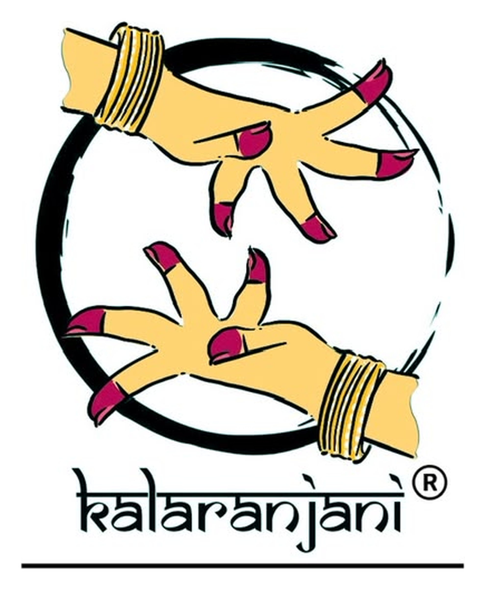
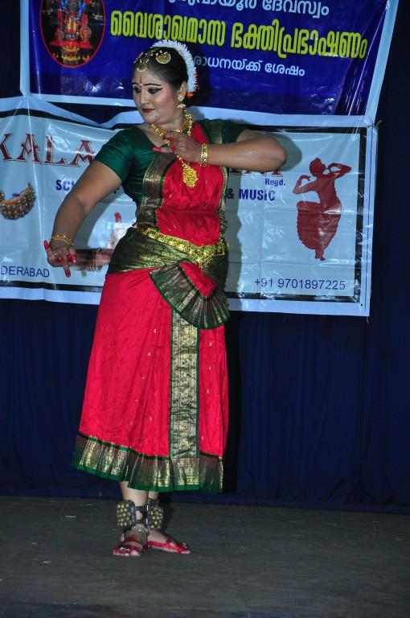
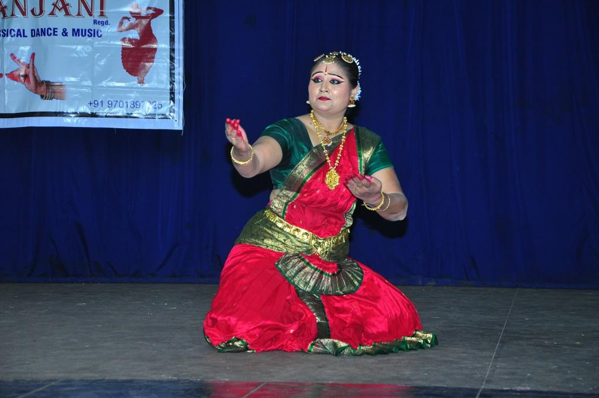
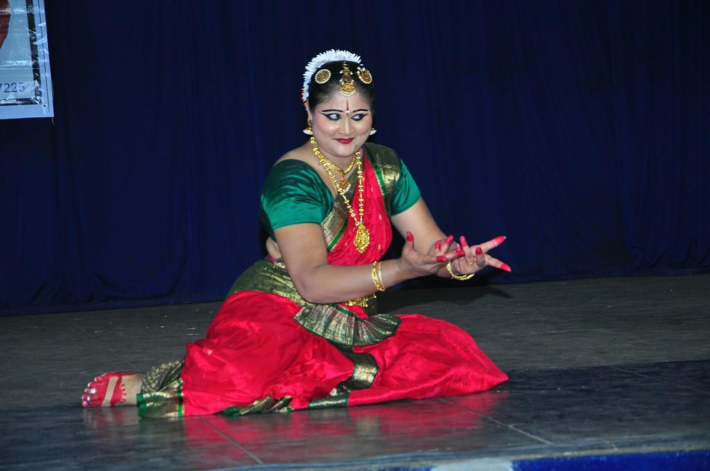
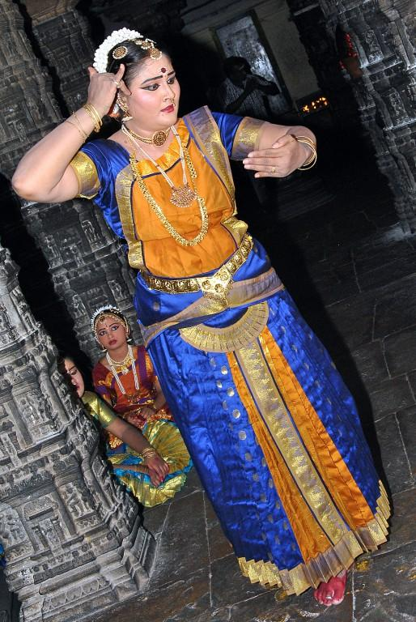
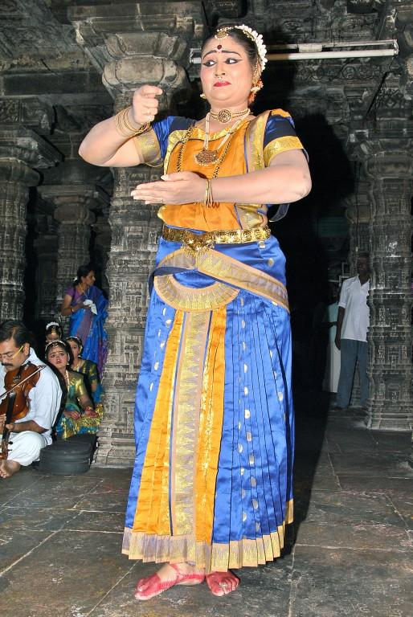
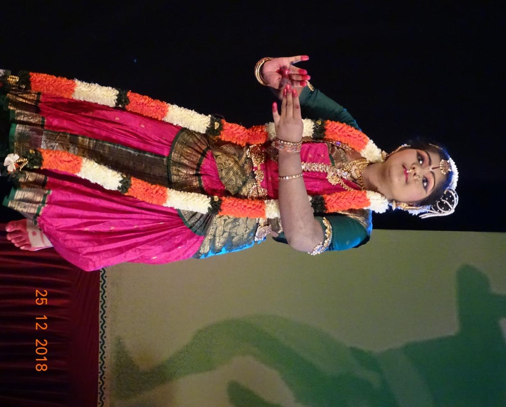

Mathematics • Performing Arts
Graduate in Mathematics from Osmania University, Hyderabad; Post Graduate degree in Performing Arts from the University of Hyderabad.

KALARANJANI • HYDERABAD / SECUNDERABAD
A journey in Bharatanatyam rooted in the Kalakshetra tradition, shaped by dedicated gurus and carried forward through disciplined teaching, performance and cultural service.
THE KALARANJANI JOURNEY
Dance has been an integral part of Smt. Shyamala Srinivas's life from the age of four. Her training began with her mother, Late Smt. Sundarambal Murthy, continued with her aunt Late Smt. Lalitha Sastry, and continues with Shri Pasumarthy Ramalinga Sastry.
Today, Kalaranjani School of Dance & Music in Secunderabad nurtures students through training, performance opportunities, cultural programmes and a deep respect for the classical arts.
THE GURU
Guru • Dancer • Teacher • Author • Founder, Kalaranjani

A lifelong relationship with Bharatanatyam.
Smt. Shyamala Srinivas pursued Bharatanatyam from the tender age of four. She was initially trained by her mother, Late Smt. Sundarambal Murthy, and later by her aunt Late Smt. Lalitha Sastry, described in the supplied profile as a product of Kalakshetra and a direct disciple of Guru Late Smt. Rukmini Devi Arundale. She continues her learning from Shri Pasumarthy Ramalinga Sastry, also described as a direct student of Guru Late Smt. Rukmini Devi Arundale.
Her artistic grounding is described as being in the Kalakshetra style of Bharatanatyam, further enriched through learning from Prof. Shri C. V. Chandrasekhar, Smt. Savithri Jaganath Rao, Smt. Bragha Brusell, Late Smt. Kalanidhi Narayana, Late Smt. Kamala Rani and Nrityachoodamini Priyadarshini Govind.
The profile highlights her command of intricate rhythms and patterns, grace, dexterity and ease in elaborate postures.
Graduate in Mathematics from Osmania University, Hyderabad; Post Graduate degree in Performing Arts from the University of Hyderabad.
SangeethAlankar from Akhil Bharatiya Gandharva Mahavidhyalaya (ABGMV) Mandal, Miraj, Maharashtra.
Participated in a workshop on KalariPayattu with Guru Shri T. Sudhakaran Gurukkal, CVN Kalari, Kerala.
Conferred by the Department of Language & Culture, Government of Telangana and Abhinetri Arts Academy.
WRITINGS
The supplied profile records two published books, named “Nritya Kala Bodhini”.
BHARATANATYAM TRAINING
Kalaranjani is described in the supplied profile as a School of Dance & Music in Secunderabad, where students are nurtured for performance and cultural participation.
Posture, adavus, hand gestures, rhythm and movement vocabulary.
Building musical understanding, jathis, abhinaya and classical presentation.
Stage discipline, expression, group coordination and confidence through live opportunities.
Progressive preparation for mature repertoire, presentations and long-term artistic development.
PERFORMANCES & CULTURAL ENGAGEMENT
The following list is transcribed and professionally organised from the performance record supplied for Kalaranjani. It refers collectively to Smt. Shyamala Srinivas and her students; the source does not identify individual students for each event.
Performance at Tirumala Tirupati for Nadaneerajanam.
Performances for three consecutive years — 2018, 2019 and 2020 — at Parade Grounds, Secunderabad, organised by the Government of Telangana.
Annual festival organised by the Department of Language and Culture, Government of Telangana and Abhinetri Arts Academy.
Performance in April 2018.
Performance at Shree Vidya Sarswati Temple, Wargal.
Performance at Shree Kanikka Parameshwari Temple, Makthal, Mahbubnagar District.
Performance in the cultural concert series organised by Shilparamam, Hyderabad.
Performance at Annamayyapuram, HITEX Hyderabad.
Performance for National Rashtrabhasha Divas celebrations.
Performance during Navarathri celebrations.
Performance at Shilparamam, Hyderabad.
Performance at Lord Shri Krishna Temple, Guruvayoor, Kerala.
Performance at Shri Thillai Natarajar Temple, Chidambaram, Tamil Nadu.
Performance at the Onam celebrations of the Indian Army, Secunderabad.
Performance for the 30th Rising Day celebrations of the Indian Army, Madras Regiment, Secunderabad.
Performance for Ramanavami celebrations for seven consecutive years from 2013, as recorded in the supplied profile.
Performance at Desika Sabha, Secunderabad.
Thematic presentation for Vagdevi Vilas Institutions.
Tamil New Year celebrations at the request of Tamizh Sangham of Goa; Madalamasam celebrations at Lord Ayyappa Temple, Vasco, Goa; and a classical dance performance during the birthday celebration of the then Governor of Goa.
Performance and lecture demonstration on Nritta for a Regional Kendriya Vidyalaya Schools meeting, Panjim, Goa.
Annual youth festival of Music & Dance under the aegis of Kalasagaram, Secunderabad.
Thematic presentation for the centenary celebrations of Srila Prabhupada, founder of ISKCON.
Performance at Sundarayya Vignana Kala Kendram, Baghlingampally, Secunderabad.
FROM THE KALARANJANI ARCHIVE
Photographs reproduced from the supplied Kalaranjani profile document. Captions are intentionally conservative where the source does not identify a specific event or student.





Individual student names and specific awards are not stated in the supplied profile. They can be added to the gallery later when you provide the names and captions you want published.
VIDEO ARCHIVE
These twelve YouTube links are listed in the supplied Kalaranjani profile. The website opens the original YouTube videos rather than re-hosting them.
CULTURAL PROGRAMMES
Kalaranjani's archive reflects participation in temple festivals, government cultural festivals, institutional celebrations, youth festivals and thematic presentations.
A future programme identity for presenting student work and encouraging stage experience.
A programme concept inspired by the performance archive and classical devotional repertoire.
A platform bringing Carnatic music and Bharatanatyam together.
Workshops, interactions and artist-led learning for students and teachers.
A proposed platform celebrating the teachers who preserve India's classical arts.
A proposed collaborative forum for dancers, musicians, teachers and young artists.
EXAMINATION PATHWAY
The supplied Guru profile does not name the universities or examination boards used by Kalaranjani for students. We should add those names only after you confirm the exact affiliations.
Verified affiliation to be added
Send me the exact university / board names and I will update this section.YOUR ARTISTIC JOURNEY BEGINS HERE
Enquire about Bharatanatyam training, performances and cultural programmes.
JOIN KALARANJANI
Connect your Google Form by replacing the enquiry form URL in script.js.